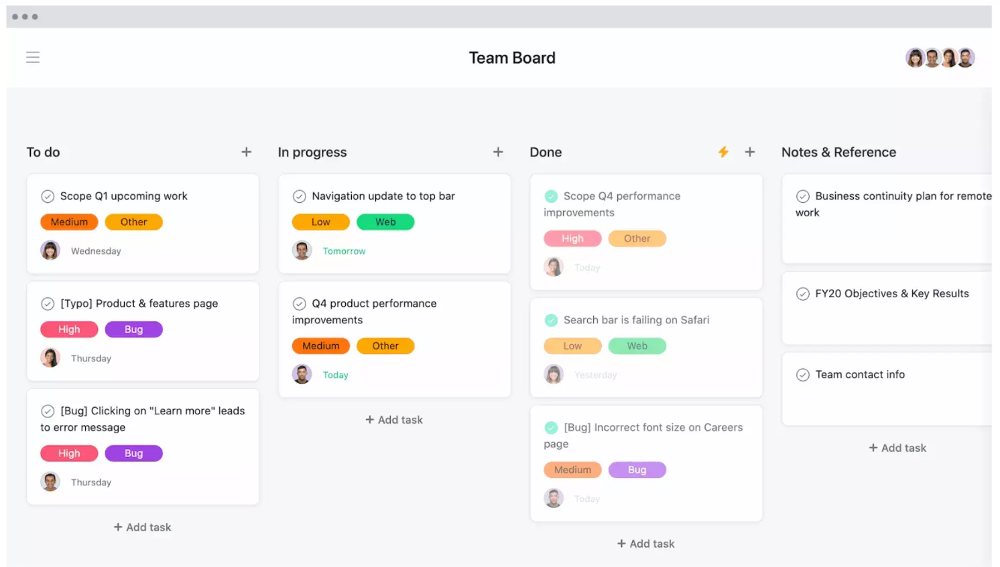
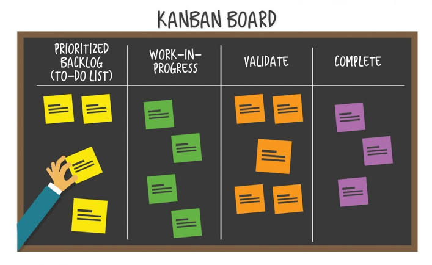
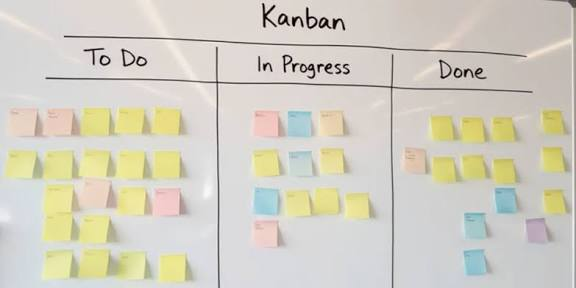

An interactive tutorial on Kanban — a lightweight Agile approach for visualizing work, limiting work in progress, and creating a smooth continuous flow.
XP, Scrum and Kanban are Agile approaches designed to help teams deliver valuable, working software quickly and continuously while responding to changing customer needs.
Focuses heavily on how software is developed. Pair programming, refactoring and test-first development are examples of XP practices.
Focuses on iterative project management. Work is organized into fixed-length iterations called Sprints.
Focuses on continuous work and flow. Work moves through a visual system from request to delivery.
Kanban is an Agile project management method that uses visual boards to help teams track work through stages of completion.
Kanban pulls work items from the backlog into a steady, manageable flow.



A board provides the team with a shared view of upcoming, active, blocked and completed work.
The surface your team uses to track work. It can be a physical whiteboard with sticky notes or a digital board. It provides a shared view of active, upcoming, blocked and completed tasks.
Cards represent individual tasks or work items. They can contain a title, owner, due date, priority, description and supporting files.
Columns represent the stages through which work moves. Examples include To Do, In Progress, Review, Testing and Done.
Horizontal sections that separate work on the same board. Teams can group work by priority, project, team, work type or customer.
WIP limits restrict how many tasks can exist in a particular stage at one time. The goal is to reduce multitasking and encourage finishing work before starting more.
Maximum allowed in "In Progress": 3
The team has room for one more active task.
Total elapsed time from the moment a customer makes a request until the work is fully delivered.
Active time required to complete a work item once actual work has started.
Number of work items completed by the team over a specific period such as a day, week or month.
Choose the best answer for each question.
Review the concepts above and try again.